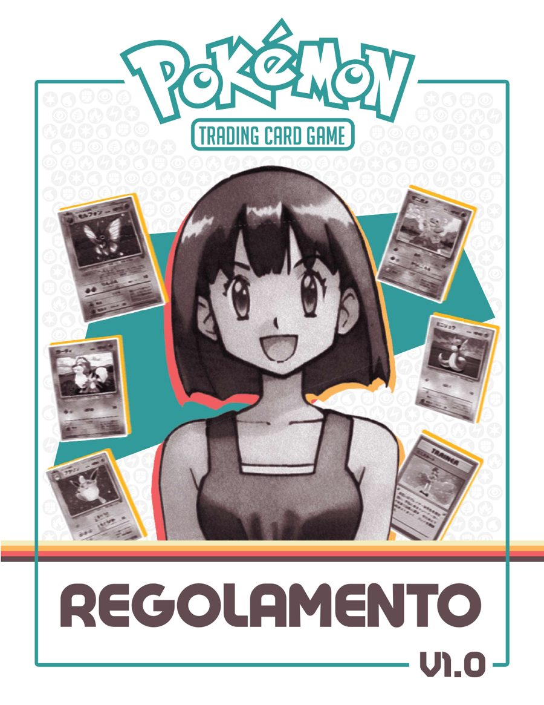
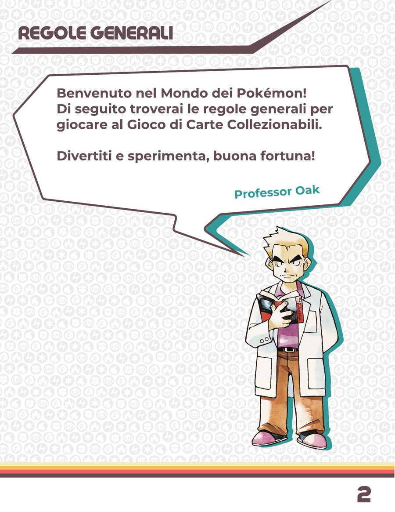
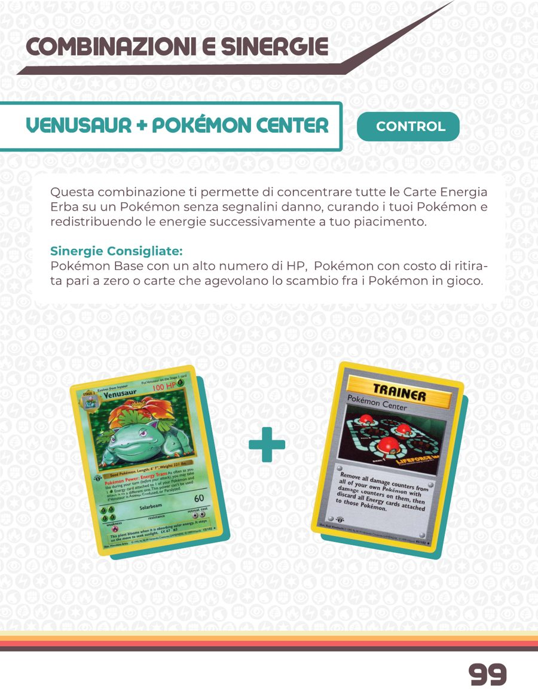
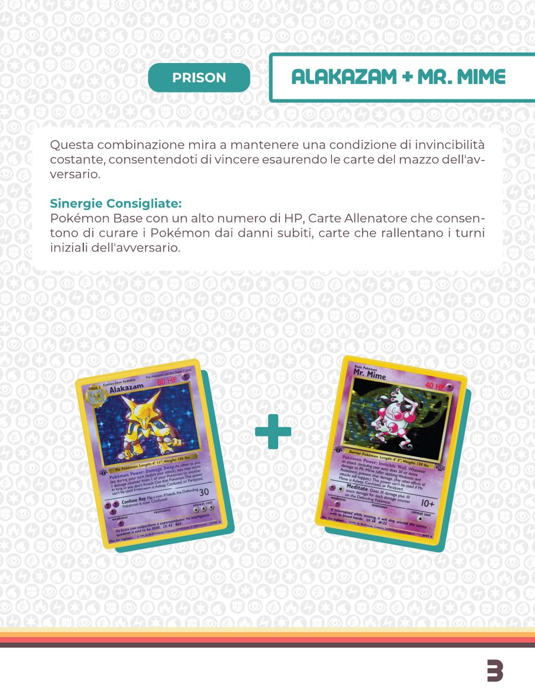
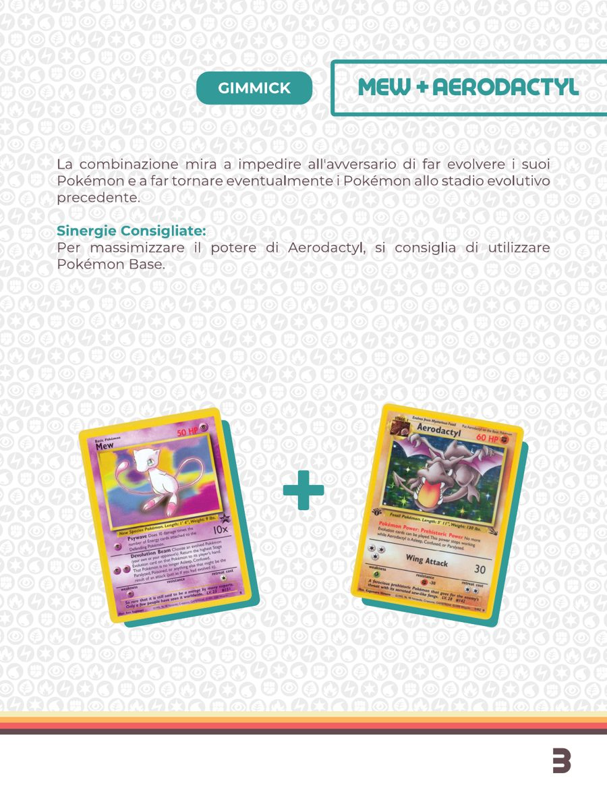
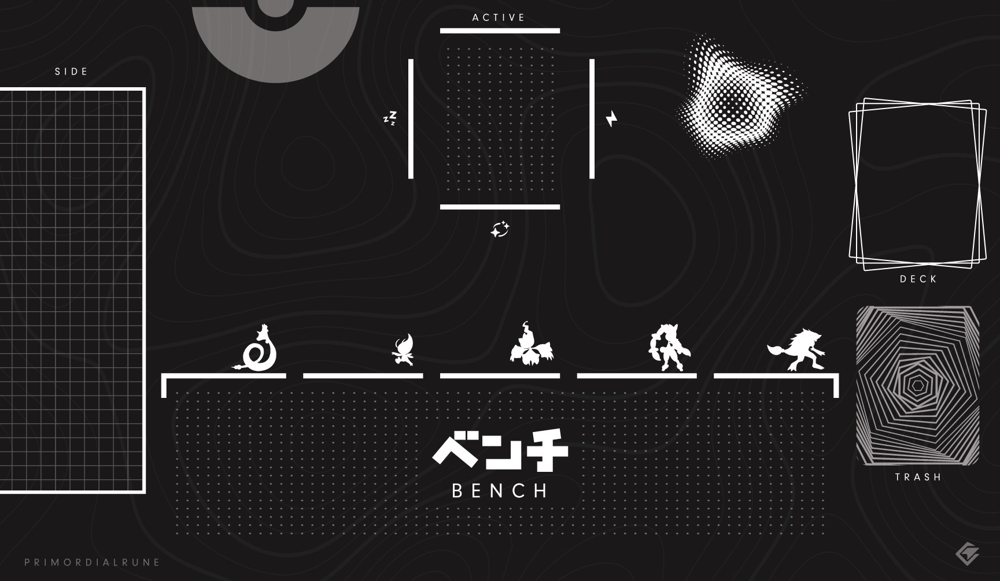

PTCG Cube
- Format
- A cube for the Pokémon Trading Card Game, with Roguelike and Co-op modes
- Card pool
- The first sets of the Pokémon TCG ?
- Rulebook
- v1.0, in Italian, February 2024
- My part
- Format design, rulebook writing and layout, playmat ?
What a cube is
A cube is a fixed collection of cards, curated so that players can draft from it and build decks on the spot. Nobody brings a deck. Everyone opens the same pool, picks a card, passes the rest, and plays what they built.
The PTCG Cube brings that format to the first era of the Pokémon Trading Card Game.
QUESTION FOR OMARHow big is the cube, how many players, and how does the draft work (packs, picks, deck size)? None of it is in the rulebook yet, and it's the first thing a designer will want to know.
Welcome
The rulebook opens the way the games did: Professor Oak welcomes you to the world of Pokémon, explains the general rules, and tells you to have fun, experiment, and good luck.

Archetypes
The heart of the rulebook is a catalogue of combinations. In a draft you don't know what you'll open, so the book teaches you what to look for: pairs of cards that make a strategy, each tagged with its archetype and the kind of cards that support it.
- Control. Venusaur + Pokémon Center: move every Grass Energy onto a Pokémon with no damage, heal the team with Pokémon Center, then redistribute the energy as you like.
- Prison. Alakazam + Mr. Mime: stay invincible and win by decking your opponent.
- Meta. Dragonite + Dodrio: keep switching to clear Paralysis, Poison and Confusion, so your attackers never stop.
- Gimmick. Mew + Aerodactyl: stop your opponent from evolving, and send their Pokémon back down a stage.
- Gimmick. Ninetales + Pokémon Flute: drag a weak Pokémon from their discard pile onto their bench, then pull it into the active spot for an easy knock out.


Each combination is a lesson in reading a 25-year-old card pool like a designer: what was broken, what was quietly strong, and what only works together.

QUESTION FOR OMARWere these combos found by playtesting the cube, or chosen before? A line about how you curated the pool would make this page.
Roguelike and Co-op
QUESTION FOR OMARThe cube has a Roguelike mode and a Co-op mode, but I couldn't find their rules in the folder (only boss.ai and powers.ai, which sound like they belong to them). Can you tell me how they work, or point me to the files? This page is waiting for you.
The table
The cube is a physical object: the rulebook you are reading, a playmat, the cards. In the room, it's the only game you don't put into anything. You read it.

QUESTION FOR OMARIs there a photo of the cube on a real table, or of the playmat in use? A picture of people playing would be the best possible last page.